Logistic Regression for Binary Outcomes and Risk Stratification
Opening scenario
The outpatient director at Riverbend Health System has staff time for reminder calls to about one patient in ten each week. Calling patients at random spreads that time across many people who would have attended anyway. The director asks the analyst a prediction question: which scheduled appointments are most likely to be missed? If the appointments can be ranked by risk, the calls can go first to the patients with the highest risk.
The outcome in this question is not a number such as charges. Each appointment is either kept or missed. Chapters 12 and 13 fitted lines to numerical outcomes; this chapter introduces the regression model for a yes-or-no outcome, fits it in Excel, and uses it to sort appointments into risk tiers. Chapter 15 then turns the ranking into a calling plan.
By the end of this chapter, you will be able to:
- Explain why a yes-or-no outcome calls for logistic regression rather than linear regression.
- Calculate odds and an odds ratio from a two-by-two table, and interpret a model’s odds ratios with the other variables held constant.
- Fit a logistic regression in Excel with Solver, and convert its coefficients into odds ratios and predicted probabilities.
- Interpret the area under the receiver operating characteristic curve (AUROC) as a measure of how well a model ranks risk.
- Group cases into risk tiers with predicted probabilities, and distinguish a supportive use of a risk score from a harmful one.
Key concepts
Recall from Chapter 12 that a model turns inputs into an output through a rule whose parameters are fitted to data. In logistic regression the output is a probability. Using a model applies its fitted parameters, here called coefficients, to one case; fitting it estimates those parameters from many cases.
The chapter uses the no-show measure from Chapter 4: no-shows divided
by kept-or-missed appointments (completed plus no-show), with
cancellations and rescheduled appointments excluded. In
datasets/DS2_appointments_clean.csv, the second teaching
dataset (DS2), 4,913 of 30,571 kept-or-missed appointments from January
2024 to December 2025 were missed, a rate of 16.1 percent. The
subsections below build, in order, the ideas the walkthrough uses, and
Figure 1 shows the path. The chapter first calculates a prediction from
coefficients it supplies, then shows how Solver fits those coefficients
from many appointments.
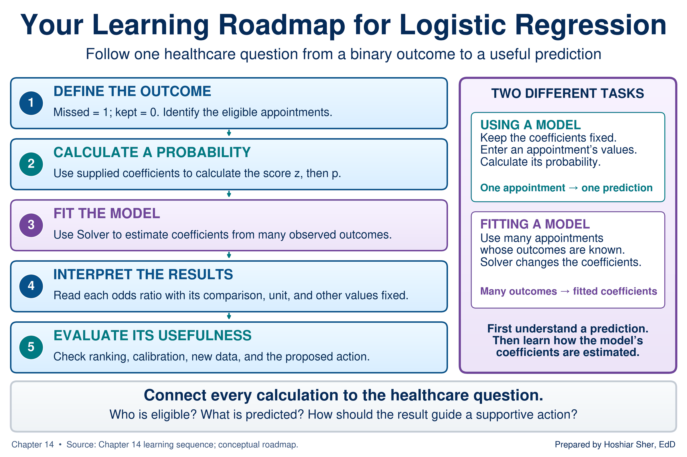
Yes-or-no outcomes and probability
A binary outcome has exactly two possible values: an
appointment is missed or kept, a patient is readmitted or not, a
screening is completed or not. The data record it as 1 for the event and
0 for its absence, as the no_show_flag column does. The
average of a 0-or-1 column is the share of rows with a 1, so the average
of no_show_flag is the no-show rate, 0.161. Read as a
prediction, that share is a probability: before you know anything else
about an appointment, the chance that it is missed is about 0.16.
A model for a binary outcome therefore predicts a probability, and a probability must stay between 0 and 1. A straight line cannot guarantee that. Chapter 12’s line extends without limit in both directions, so for some combinations of the explanatory variables it predicts values below 0 or above 1, which have no meaning as probabilities. Figure 2 shows the problem and its remedy.
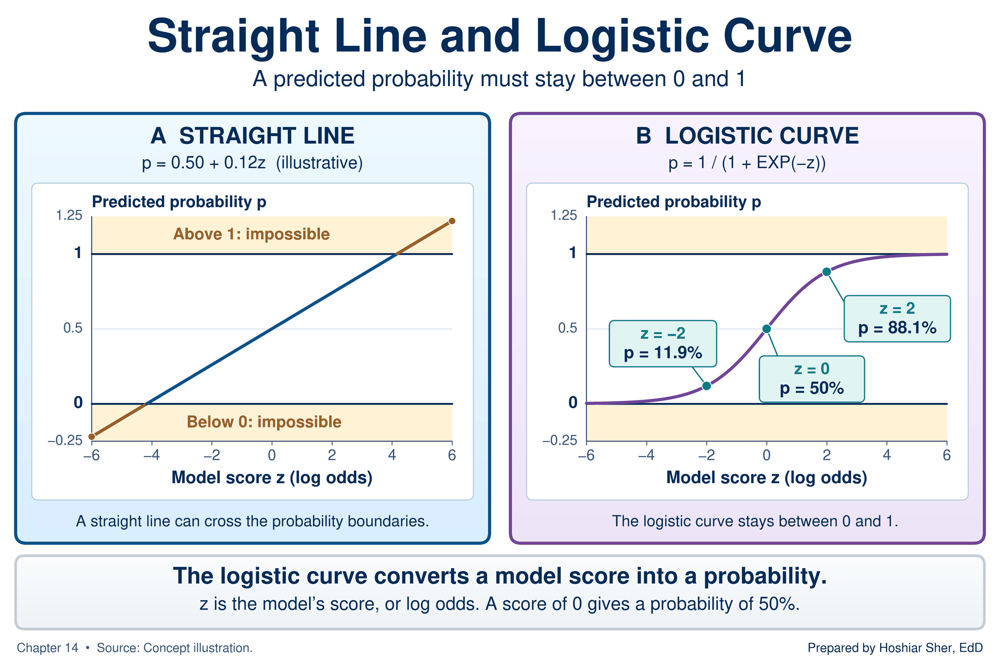
Logistic regression is a regression model that predicts the probability of a binary outcome from one or more explanatory variables, keeping every prediction between 0 and 1 (Schober & Vetter, 2021; Sperandei, 2014). It is the standard model for a yes-or-no outcome in health research (Hosmer et al., 2013).
Odds and the odds ratio
Logistic regression’s results are read on the odds scale rather than as probabilities, so odds come first. The odds of an event are its probability divided by the probability that it does not happen: odds = p ÷ (1 − p). With a no-show rate of 0.161, the odds of a no-show are 0.161 ÷ 0.839 = 0.19, or about 19 missed appointments for every 100 kept. Odds and probability carry the same information on different scales: a probability of 0.5 is odds of 1, and as the probability approaches 1 the odds grow without limit.
An odds ratio compares the odds in two groups by
dividing one by the other (Szumilas, 2010). An odds ratio of 1 means the
odds are the same in both groups; above 1, the first group has higher
odds; below 1, lower odds. You can calculate one from a two-by-two
table, without any model. Table 1 splits the appointments by
transportation_barrier_flag, which records whether the
patient reported difficulty getting to the clinic.
| Transportation barrier | Appointments | Missed | Kept | No-show rate | Odds of a no-show |
|---|---|---|---|---|---|
| Yes | 5,718 | 1,296 | 4,422 | 22.7% | 0.293 |
| No | 24,853 | 3,617 | 21,236 | 14.6% | 0.170 |
The odds ratio is 0.293 ÷ 0.170 = 1.72: the odds of a no-show are
about 72 percent higher for patients with a transportation barrier. In
Excel, the counts come from COUNTIFS, as in Chapter 9
(Microsoft, n.d.-b).
Odds ratio. The odds of an event in one group divided by the odds in a comparison group. A value of 1 means no difference in odds, above 1 means higher odds, and below 1 means lower odds.
An odds ratio is not a ratio of probabilities. The no-show rates in Table 1 are 22.7 and 14.6 percent, a ratio of 1.56, while the odds ratio is 1.72. The two are close only when the event is rare. Say “72 percent higher odds,” not “72 percent more likely.”
Figure 3 sets the two calculations side by side. Both start from the same counts; only the denominator changes.
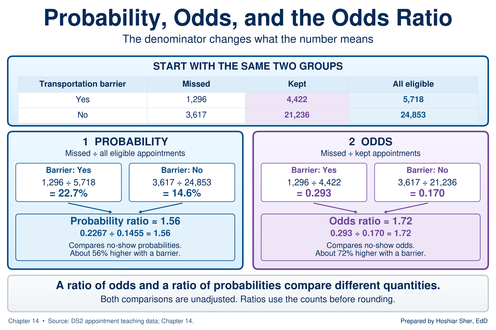
Using Table 1, (1) calculate the odds of a no-show for an appointment with a no-show rate of 30 percent; (2) explain in one sentence what an odds ratio of 1.72 says about patients with a transportation barrier; (3) state what an odds ratio of exactly 1 would have meant. The answers are in the answer key at the end of the chapter.
From a line to a probability
A logistic regression begins like Chapter 13’s multiple regression. It multiplies each explanatory variable by a coefficient and adds an intercept, producing a score, written z:
z = intercept + coefficient₁ × variable₁ + coefficient₂ × variable₂ + …
It then passes the score through the logistic function, the S-shaped curve in Figure 2, which turns any score into a number between 0 and 1. That number is the predicted probability. A score of 0 gives a probability of 0.5; large negative scores give probabilities near 0, and large positive scores give probabilities near 1. The score itself is the log-odds of the event, the natural logarithm of the odds, which is why the model’s coefficients are read on the odds scale rather than as changes in probability.
=1/(1+EXP(-z)) converts a score into a probability.
zis the score: the intercept plus each coefficient times its variable.-zreverses the sign of the score.EXP(-z)raises the constant e, about 2.718, to the power −z.EXPis the inverse of the natural logarithm,LN, which Chapter 12 used for a skewed response (Microsoft, n.d.-d).1+EXP(-z)is always greater than 1, so1/(1+EXP(-z))always falls between 0 and 1.
For z = −2, EXP(2) is 7.389, and
=1/(1+EXP(2)) returns 0.119, a probability of about 12
percent.
Figure 4 applies the formula to one appointment, using the coefficients the walkthrough fits in Part C. Each coefficient is multiplied by the appointment’s value, the products are added into a score, and the logistic function turns the score into a probability.
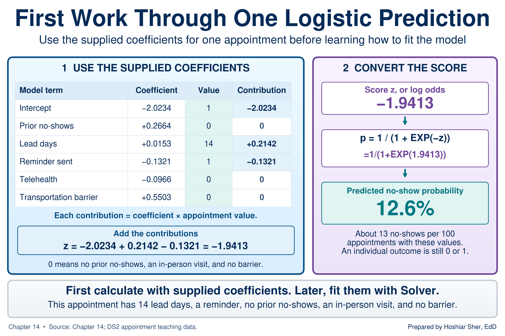
Reading the coefficients as odds ratios
Because the score is on the log-odds scale, raising e to the power of
a coefficient, =EXP(coefficient) in Excel, gives an odds
ratio (Szumilas, 2010). For a yes-or-no variable, it compares the odds
when the variable is 1 with the odds when it is 0. For a count or a
measurement, it is the factor by which the odds change for each one-unit
increase. As in Chapter 13, each odds ratio holds the other explanatory
variables in the model constant.
For example, if a model gave transportation barrier a coefficient of
about 0.54, EXP(0.54) would return 1.72, the same
comparison as Table 1, now read with the other variables held constant.
For a count variable such as prior no-shows, an odds ratio of 1.30 would
mean each additional prior no-show multiplies the odds by 1.30. Part D
of the walkthrough reads the odds ratios from the fitted model.
Exponentiate a logistic coefficient to obtain an odds ratio. Each odds ratio holds the other variables constant and describes an association in the data, not the effect of changing that factor for a patient.
How Solver finds the coefficients
Chapter 13’s least-squares line has a formula that
LINEST solves directly. Logistic regression has no such
formula; its coefficients are found by search. For any trial set of
coefficients, each appointment receives a predicted probability. The
likelihood measures how well those probabilities match
what happened: it is high when missed appointments received high
probabilities and kept appointments received low ones. Logistic
regression chooses the coefficients that make the likelihood as large as
possible (Hosmer et al., 2013).
In a worksheet, each row contributes the natural logarithm of the
probability the model gave to that row’s actual outcome:
LN(p) for a missed appointment and LN(1 − p)
for a kept one (Microsoft, n.d.-e). The sum of that column is the
log-likelihood. It is always negative, and a value
closer to 0 means a better match. Solver, the optimization add-in
introduced in Chapter 3, changes the coefficient cells until that sum is
as large as possible. Its Generalized Reduced Gradient (GRG)
Nonlinear method is designed for smooth problems of this kind
(Microsoft, n.d.-c).
Figure 5 shows the calculation for two appointments. When the trial predictions move toward what happened, each row’s logarithm moves toward 0, and so does the sum.
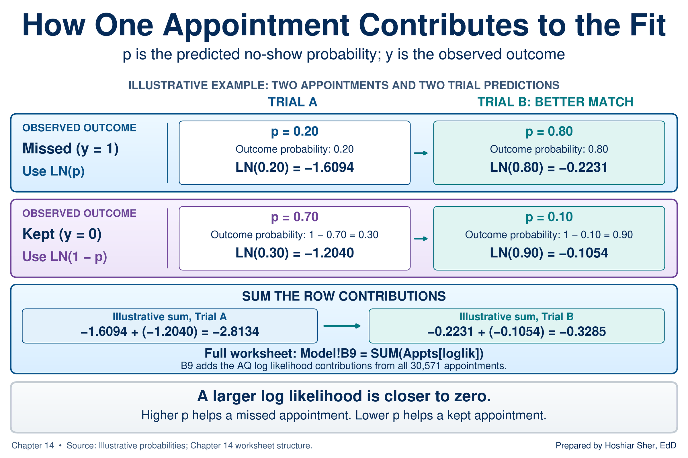
Solver comes with desktop Excel for Windows and Mac but must be switched on, as Chapter 3 showed (Microsoft, n.d.-f). Excel for the web has no built-in Solver. There, a free Solver add-in from Frontline Systems, the company that developed the desktop Solver, solves the same kind of problem. The add-in sends a copy of the workbook to Frontline’s cloud service to solve it, and its free version limits solving time (Frontline Systems, n.d.). That is acceptable for this synthetic teaching data; recall from Chapter 5 that identifiable patient data must stay in approved systems.
How well the model ranks risk
A risk model is useful to the director if it ranks appointments well: missed appointments should tend to receive higher predicted probabilities than kept ones. Two rates describe a ranking at any cutoff.
Suppose you flag every appointment whose predicted probability is above some cutoff. The true-positive rate is the share of missed appointments that are flagged. The false-positive rate is the share of kept appointments that are flagged. Chapter 15 returns to the first of these under the name recall.
A low cutoff flags almost everything, so both rates are near 1; a high cutoff flags almost nothing, so both are near 0. The receiver operating characteristic (ROC) curve plots the two rates against each other for every possible cutoff. The area under the ROC curve (AUROC) summarizes the curve in one number. It equals the probability that a randomly chosen missed appointment receives a higher predicted probability than a randomly chosen kept one, with ties counted as half (Hanley & McNeil, 1982).
It can range from 0 to 1: 0.5 is no better than a random ranking, and 1.0 is a perfect ranking. Figure 18, at the end of the walkthrough, shows this curve for the no-show model.
Risk stratification
Risk stratification sorts a population into tiers by predicted risk so that limited resources can go to the highest tiers first. A common way to form tiers is by decile: ten groups of about equal size, from the tenth of cases with the lowest predicted probability to the tenth with the highest. Comparing the observed event rate across deciles shows whether the ranking separates high-risk from low-risk cases.
A model does not need a high AUROC to be useful for this purpose. It needs the highest tier to have clearly more events than the lowest, and an action that helps the patients in that tier. A good ranking shows who is at higher risk; it does not show that an outreach call will prevent a missed appointment.
Walkthrough: fit and stratify a no-show model
This build answers the director’s question. You prepare the kept-or-missed appointments, set up the score, probability, and log-likelihood columns, fit the model with Solver, convert the coefficients to odds ratios, and sort the appointments into risk deciles. The explanatory variables are the five in Table 2. A review of 105 studies found that long lead times and a history of no-shows were the most commonly reported predictors (the term many studies use for explanatory variables) of no-shows (Dantas et al., 2018); the other three describe the appointment and the patient’s circumstances.
| Column in the file | Meaning | Values |
|---|---|---|
prior_no_show_count_12m |
No-shows by the patient in the previous 12 months | 0 to 7 |
lead_days |
Days between booking and the appointment | 0 to 210 |
reminder_sent_flag |
A reminder was sent | 1 = yes, 0 = no |
telehealth_flag |
The visit was by telehealth | 1 = yes, 0 = no |
transportation_barrier_flag |
The patient reported difficulty getting to the clinic | 1 = yes, 0 = no |
A model meant for live use may include only information available
when the decision is made. The reminder_sent_flag column
records the clinic’s routine reminder, which is sent zero to six days
before the visit, so a calling list prepared a week ahead would not yet
know it. The director’s reminder calls are additional outreach, separate
from that routine reminder. The walkthrough keeps the variable because
it is a retrospective teaching model fitted to past appointments. A
model built to rank next week’s appointments would either drop it or use
the reminder plan recorded at booking.
Before you start: open
datasets/DS2_appointments_clean.csv, and immediately save a
working copy as an Excel workbook so the original stays untouched. These
teaching files hold no real patient information. The steps require Excel
for Microsoft 365 (desktop or web), Excel 2021, or Excel 2024.
- Desktop Excel: choose File > Save As, pick Excel Workbook (.xlsx), and enter the file name.
- Excel for the web: upload the CSV file to OneDrive and open it; Excel converts it to a workbook. Click the file name at the top of the window to rename it. Your changes save automatically.
Part C uses Solver. Choose your route now:
| Your Excel | Route for Part C |
|---|---|
| Windows desktop | Built-in Solver, Data > Solver. If it is missing, switch it on with File > Options > Add-ins (Chapter 3). |
| Mac desktop | Built-in Solver, Data > Solver. If it is missing, switch it on with Tools > Excel Add-ins (Chapter 3). |
| Excel for the web | The free Solver add-in from Frontline Systems: Home >
Add-ins, search for Solver, and add it. |
| Any version, if Solver will not run | Type the six coefficients listed at the end of Part C into the coefficient cells, and continue with Part D. Every later result matches the text. |
Part A. Prepare the appointments. The file holds all
36,000 scheduled appointments. Sorting by
attendance_outcome (column AJ) places the five
outcomes in alphabetical blocks, so you can delete the cancellations and
rescheduled appointments by row number.
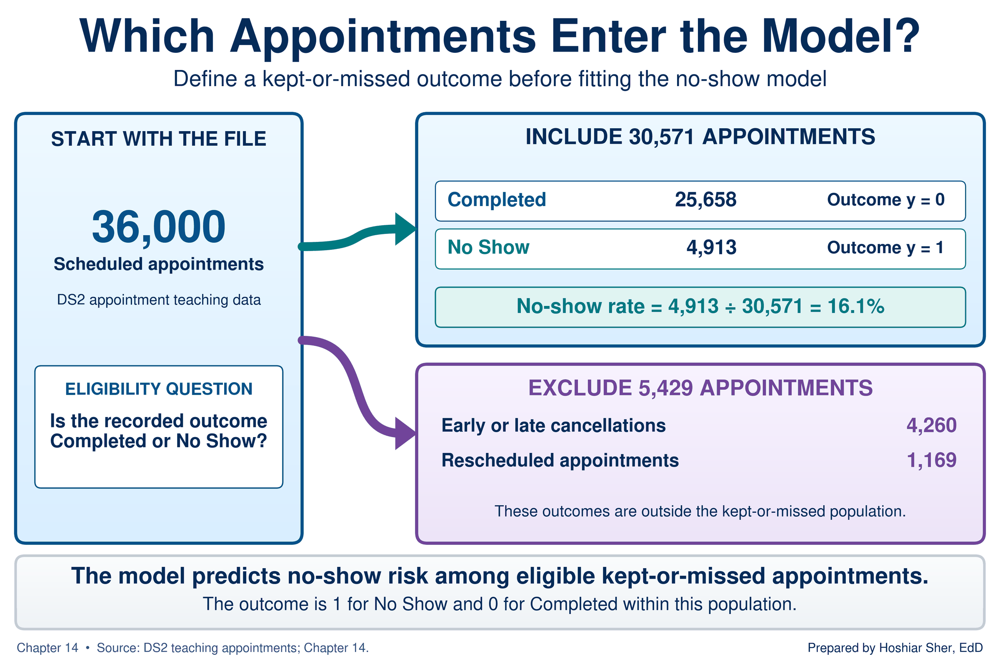
Figure 6 shows the result Part A produces: 30,571 appointments with a recorded kept-or-missed outcome.
- Open the working copy. It has 36,000 appointments in rows 2 to 36001
and 40 columns,
AtoAN. - Click any cell in column
AJ. On the Data tab, open the sort dialog: click Sort (in Excel for the web, Sort > Custom Sort). - Confirm that My data has headers is checked, choose
attendance_outcome under Sort by,
choose A to Z, and click OK. Rows 2 to
25659 now show
Completed, and row 25660 showsEarly Cancel. - Click the Name Box, the box to the left of the
formula bar, type
34833:36001, and press Enter. Excel selects the 1,169Rescheduledrows at the bottom. - On the Home tab, choose Delete > Delete Sheet Rows.
- Click the Name Box again, type
25660:29919, and press Enter. Excel selects the 4,260Early CancelandLate Cancelrows. - Choose Home > Delete > Delete Sheet Rows. The
data now end at row 30572, and row 25660 shows
No Show. - Click any cell inside the data. On the Insert tab, click Table, confirm My table has headers is checked, and click OK.
- On the Table Design tab (named
Table on macOS), set the Table Name to
Appts.
Pause and check your work against Figure 7 before you continue.
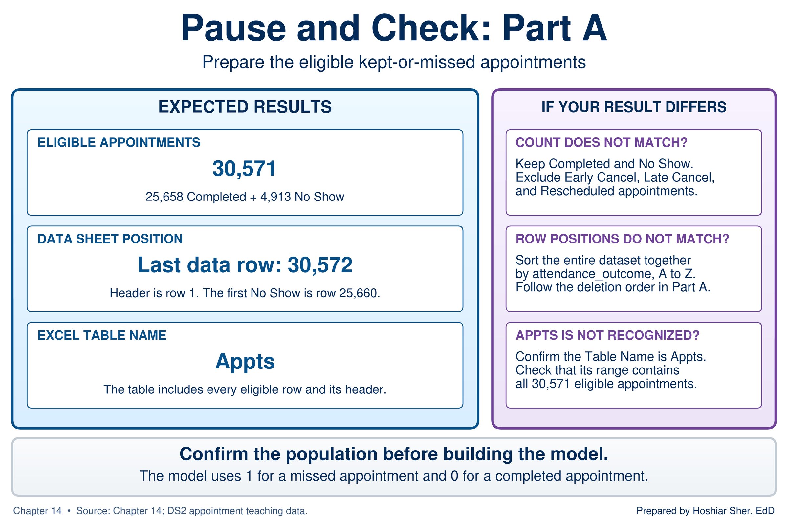
Part B. Set up the model. The coefficients live on their own sheet, and three calculated columns in the Table turn them into a score, a probability, and a log-likelihood for every appointment.
- Add a worksheet with the + beside the sheet tabs,
double-click the new tab, type
Model, and press Enter. - On the
Modelsheet, enter the labels and starting values in Table 3. Every coefficient starts at 0.
| Cell | Enter | Cell | Enter |
|---|---|---|---|
A1 |
Term |
B1 |
Coefficient |
A2 |
Intercept |
B2 |
0 |
A3 |
Prior no-shows |
B3 |
0 |
A4 |
Lead days |
B4 |
0 |
A5 |
Reminder sent |
B5 |
0 |
A6 |
Telehealth |
B6 |
0 |
A7 |
Transportation barrier |
B7 |
0 |
- Return to the data sheet. Click
AO1, typescore, and press Enter. The Table expands to include columnAO. - In
AO2, enter=Model!$B$2 + Model!$B$3*[@prior_no_show_count_12m] + Model!$B$4*[@lead_days] + Model!$B$5*[@reminder_sent_flag] + Model!$B$6*[@telehealth_flag] + Model!$B$7*[@transportation_barrier_flag]. EachModel!$B$cell is a coefficient, and each[@...]reference is the same row’s value. The formula fills the whole column, and every row shows0, because every coefficient is still 0. - Click
AP1, typeprob, and press Enter. - In
AP2, enter=1/(1+EXP(-[@score])). Every row shows0.5. - Click
AQ1, typeloglik, and press Enter. - In
AQ2, enter=IF([@no_show_flag]=1, LN([@prob]), LN(1-[@prob])). Every row shows-0.693147, the natural logarithm of 0.5. - On the
Modelsheet, typeLog-likelihoodinA9. - In
B9, enter=SUM(Appts[loglik]).B9shows about-21190.20; Excel may display more decimal places. - Type
No-show rateinA10, and inB10enter=AVERAGE(Appts[no_show_flag]).B10shows about0.1607, the 16.1 percent rate from Chapter 4.
Pause and check your work against Figure 8 before you continue.
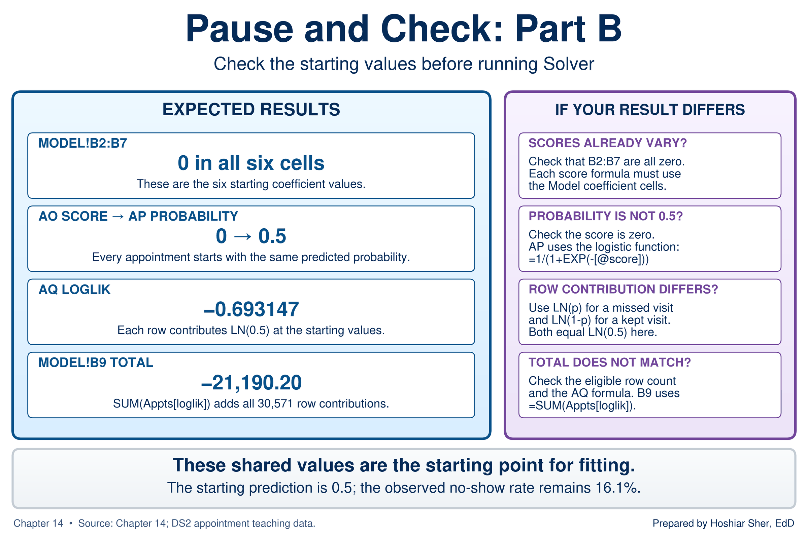
Part C. Fit the model with Solver. Solver now
searches for the six coefficients that make B9 as large as
possible. Figure 9 shows how the worksheet and the Solver settings
connect.
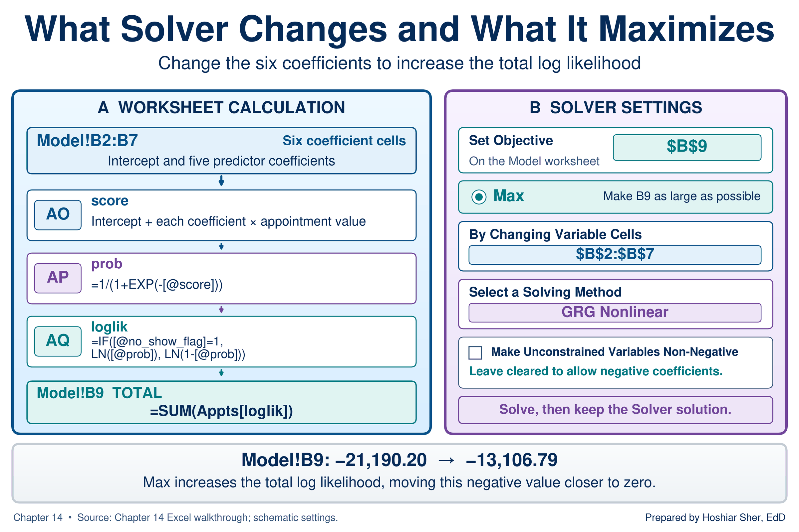
On the
Modelsheet, clickB9.Choose Data > Solver. In Excel for the web, first confirm that the workbook shows as saved, because the add-in solves the saved copy; then open the Frontline Solver add-in from the Home tab. Its task pane has the same fields as the desktop dialog (Frontline Systems, n.d.).
In Set Objective, confirm
$B$9, and select Max.In By Changing Variable Cells, enter
$B$2:$B$7.Clear the Make Unconstrained Variables Non-Negative check box. Three of the fitted coefficients are negative, and this box would prevent that.
In Select a Solving Method, choose GRG Nonlinear. ::: caution If a cell in the
loglikcolumn shows#NUM!, a probability has reached exactly 0 or 1, andLNcannot take the logarithm of 0. This happens when a search step goes too far. ResetB2:B7to 0 and run Solver again. :::Click Solve. Solver may take a minute while it recalculates 30,571 rows many times. When the Solver Results dialog appears, keep Keep Solver Solution selected and click OK.
B9 now shows about -13106.79, much closer
to 0 than the starting -21190.20, and the coefficients in
B2:B7 should agree with Table 4 to about three decimal
places. If B9 differs from -13106.79 by more
than 0.1, run Solver again from step 21; it continues from the current
values. In Excel for the web, the free add-in limits solving time, so if
it stops with a time-limit message, use the published values in the next
step.
| Cell | Term | Published coefficient |
|---|---|---|
B2 |
Intercept | -2.0234 |
B3 |
Prior no-shows | 0.2664 |
B4 |
Lead days | 0.0153 |
B5 |
Reminder sent | -0.1321 |
B6 |
Telehealth | -0.0966 |
B7 |
Transportation barrier | 0.5503 |
- Type the six published coefficients from Table 4 into
B2:B7, replacing Solver’s values. Solver’s answer can differ from them in a later decimal place, and that is enough to move a few appointments across a decile boundary in Part E; the published values make every later checkpoint match exactly.B9still shows about-13106.79.
Pause and check your work against Figure 10 before you continue.
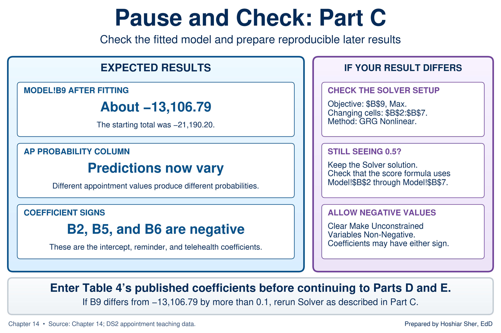
Part D. Convert the coefficients to odds ratios.
- In
C1, typeOdds ratio. - In
C3, enter=EXP(B3), then drag the fill handle down toC7. The column shows about1.305,1.015,0.876,0.908, and1.734.C2stays empty: the exponentiated intercept is the odds for an appointment with every variable at 0, not a comparison between groups.
Pause and check your work against Figure 11 before you continue.
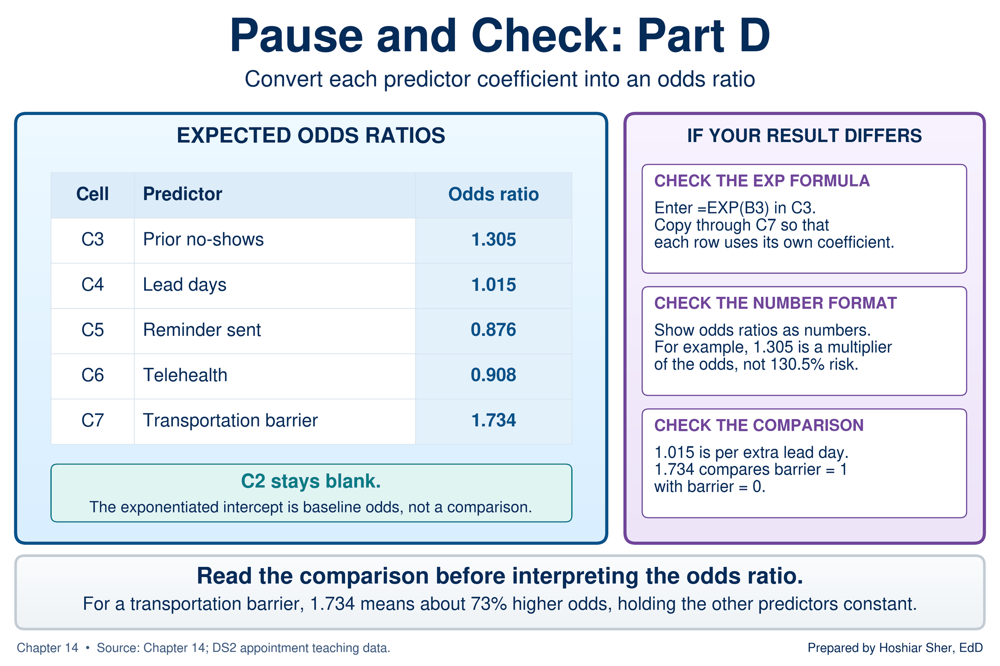
Figure 12 plots the five odds ratios. Points to the right of the dashed line at 1 are associated with higher odds of a no-show, and points to the left with lower odds.
![Figure 12: Odds ratios from the walkthrough’s no-show model, on a log scale, shown as point estimates without confidence intervals; each line runs from 1 to the estimate and is not an interval. Each holds the other four variables constant. The right panel converts the transportation barrier coefficient in B7 to its odds ratio in C7 and shows the lead-time odds ratio over 30 days, EXP(30 × 0.0153) ≈ 1.58. Transportation barrier (1.73), each prior no-show (1.31), and each extra day of lead time (1.015) are associated with higher odds of a no-show; a sent reminder (0.88) and a telehealth visit (0.91) with lower odds. Source: datasets/DS2_appointments_clean.csv, 30,571 kept-or-missed appointments, January 2024 to December 2025.](figures/generated/ch_14_odds_ratios.png)
Read in the language of the key concepts:
- Transportation barrier, 1.73. Holding the other variables constant, appointments for patients with a reported transportation barrier have about 73 percent higher odds of being missed. The unadjusted odds ratio in Table 1 was 1.72, so adjusting for the other four variables changes it very little; because odds ratios can shift with adjustment for reasons other than confounding, the similarity is a description, not a test.
- Prior no-shows, 1.31 each. Each additional no-show in the past year is associated with about 31 percent higher odds, consistent with the published finding that a history of no-shows is among the most commonly reported predictors (Dantas et al., 2018).
- Lead time, 1.015 per day. Appointments booked
further ahead are missed somewhat more often; over 30 days, the odds are
multiplied by
EXP(30*0.0153), about 1.58. - Reminder sent, 0.88. Appointments with a reminder have about 12 percent lower odds of being missed. Reminders were not assigned at random in this data, so the figure is an association, not a measured effect of sending reminders.
- Telehealth, 0.91. Telehealth visits have about 9 percent lower odds of being missed.
Solver does not report standard errors, so the worksheet gives no
confidence intervals for these odds ratios. Statistical software reports
them, as Chapter 13’s LINEST did for linear coefficients;
the values below are the standard (Wald) 95 percent intervals from a
logistic regression fitted in Python’s statsmodels library. The 95
percent intervals are narrow for lead time (1.014 to 1.017), prior
no-shows (1.23 to 1.39), and transportation barrier (1.61 to 1.86). They
are wider for reminders (0.80 to 0.96) and telehealth (0.83 to 0.99);
the telehealth interval nearly reaches 1, so the data are consistent
with almost no difference for telehealth visits. These intervals treat
every appointment as independent; patients with several appointments
make some rows related, which can make the true intervals somewhat
wider.
To see what the coefficients mean for one appointment, take a typical
in-person visit: no prior no-shows, booked 14 days ahead, with a
reminder and no transportation barrier. Its score is −2.0234 + 0.0153 ×
14 − 0.1321 = −1.9413, and =1/(1+EXP(1.9413)) gives a
probability of 0.126. The same appointment for a patient with a
transportation barrier adds 0.5503, for a score of −1.3910 and a
probability of 0.199. The odds ratio is 1.73, while the probability
rises from 12.6 to 19.9 percent. Figure 13 lays out the calculation term
by term.
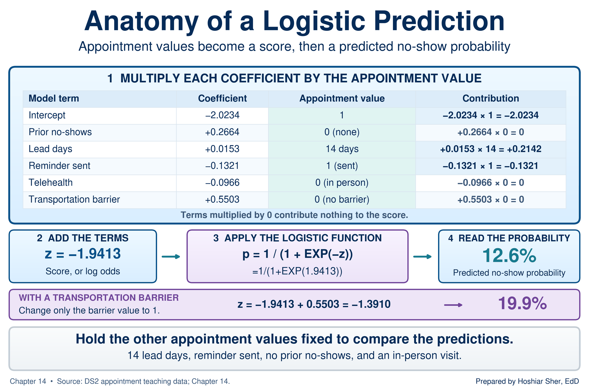
Part E. Sort the appointments into risk deciles. The
decile boundaries come from PERCENTILE.INC, introduced in
Chapter 9 (Microsoft, n.d.-g). A calculated column then assigns each
appointment to a decile with XMATCH, which finds a value’s
position in a list (Microsoft, n.d.-h). With 1 as its last argument,
XMATCH returns the position of the first boundary that is
at least as large as the probability, so an appointment at or below the
first boundary is in decile 1, and so on. COUNTIFS then
counts the appointments in each decile (Microsoft, n.d.-b), and
AVERAGEIFS calculates their no-show rate (Microsoft,
n.d.-a). Figure 14 summarizes the four formulas before you enter
them.
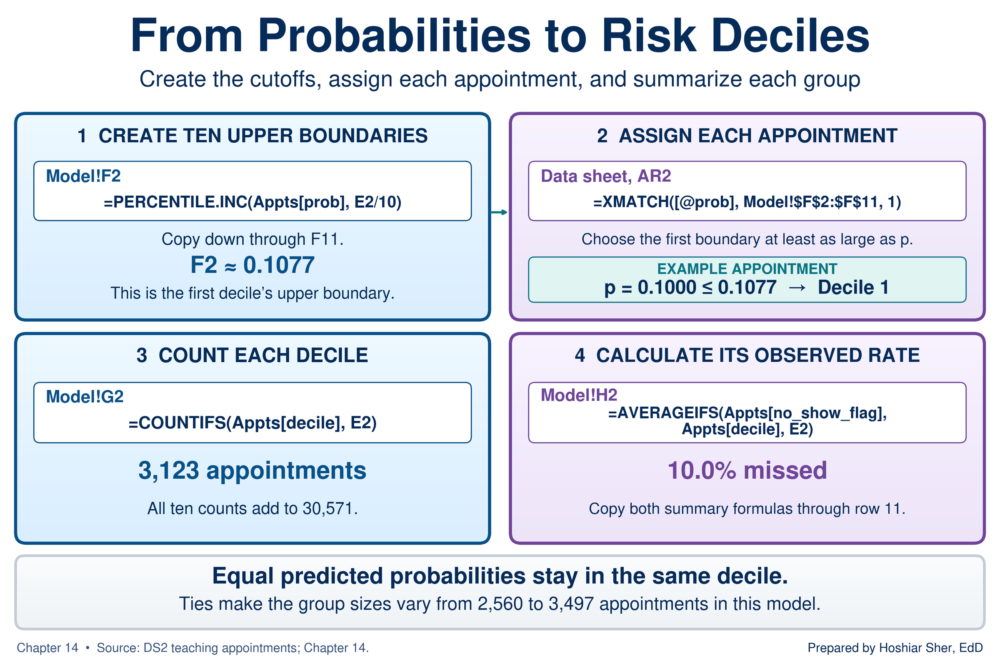
- On the
Modelsheet, type the headersDecile,Upper,Appointments, andNo-show rateinE1:H1. - Type
1inE2and2inE3. - Select
E2:E3, and drag the fill handle down toE11, which shows10. - In
F2, enter=PERCENTILE.INC(Appts[prob], E2/10), and drag the fill handle down toF11.F2shows about0.1077, the probability at or below which a tenth of the appointments fall, andF11shows the highest probability in the file. - Return to the data sheet. Click
AR1, typedecile, and press Enter. - In
AR2, enter=XMATCH([@prob], Model!$F$2:$F$11, 1). Each row shows a whole number from 1 to 10. - On the
Modelsheet, inG2, enter=COUNTIFS(Appts[decile], E2), and drag the fill handle down toG11.G2shows3123, and the ten counts add to 30,571. - In
H2, enter=AVERAGEIFS(Appts[no_show_flag], Appts[decile], E2), and drag the fill handle down toH11. - Select
H2:H11, click Home > Number > Percent Style, and click Increase Decimal once.H2shows10.0%andH11shows29.5%.
Pause and check your work against Figure 15 before you continue.
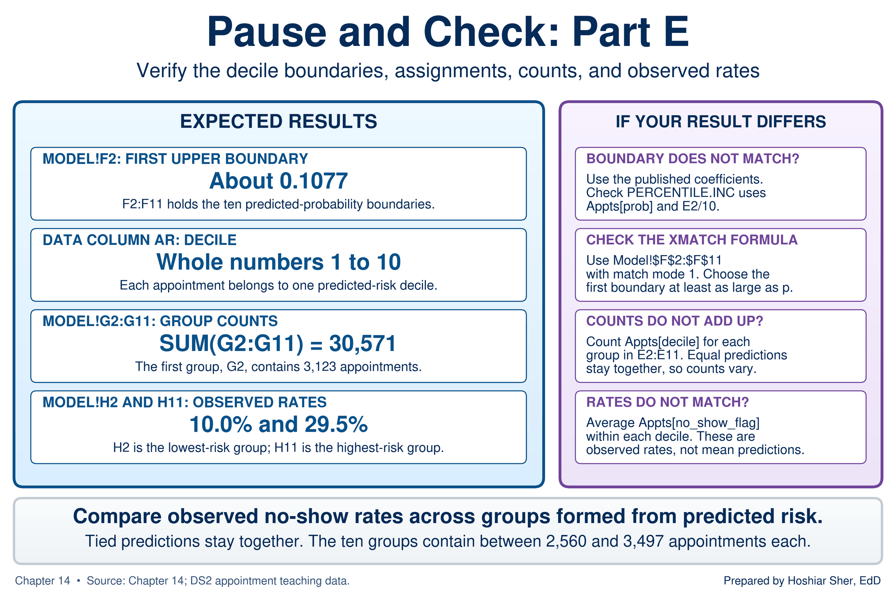
Many appointments share the same combination of values, and therefore
the same predicted probability. A group of identical probabilities
cannot be split across two deciles, so the counts in column
G range from 2,560 to 3,497 rather than exactly 3,057.
Figure 16 shows the finished Model sheet; use it to check
your work. Figure 17 then charts column H.
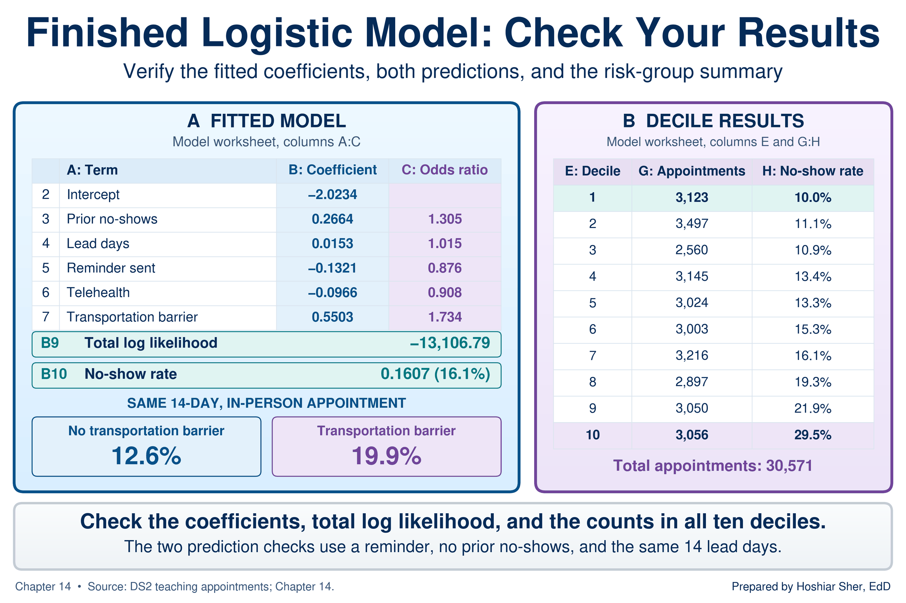
![Figure 17: Observed no-show rate by predicted-risk decile, built with PERCENTILE.INC boundaries and XMATCH as in the walkthrough. The rate generally rises from 10.0 percent in the lowest decile to 29.5 percent in the highest, about three times as high, against 16.1 percent for all appointments (dashed line). The highest decile, about a tenth of the appointments, holds 903 of the 4,913 no-shows, 18.4 percent. Group sizes (n) range from 2,560 to 3,497 because appointments with identical predicted probabilities stay in the same decile. Source: datasets/DS2_appointments_clean.csv, 30,571 kept-or-missed appointments, January 2024 to December 2025.](figures/generated/ch_14_risk_deciles.png)
The rate rises across the deciles, though not at every step: decile 3 is slightly below decile 2, and decile 5 slightly below decile 4. In the highest decile, 903 of 3,056 appointments were missed, 29.5 percent, nearly three times the 10.0 percent of the lowest decile. If the director’s staff can call about one patient in ten, calling the highest decile reaches a group in which no-shows have been almost twice as common as across all appointments. Those 3,056 appointments, a tenth of the total, account for 903 of the 4,913 no-shows, 18.4 percent. The figures describe past appointments; they do not show how many no-shows a call would prevent.
The last check is the ranking itself. Calculating the ROC curve requires a calculation at every possible cutoff, which statistical software does in one step, so Figure 18 shows the result rather than asking you to build it.
![Figure 18: The receiver operating characteristic (ROC) curve for the walkthrough’s no-show model. Each point is one cutoff on the predicted probability; the vertical axis is the true-positive rate (missed appointments flagged) and the horizontal axis the false-positive rate (kept appointments flagged). The shaded area under the curve, the AUROC, is 0.61; the dashed diagonal is a random ranking, with an AUROC of 0.50. The pair of probabilities in the right panel, 25 and 12 percent, is illustrative. Source: datasets/DS2_appointments_clean.csv, 30,571 kept-or-missed appointments, January 2024 to December 2025.](figures/generated/ch_14_roc.png)
The AUROC is 0.61. If you pick one missed and one kept appointment at random, the model gives the missed one the higher probability about 61 percent of the time, counting ties as half. That is a modest ranking: much of what leads a patient to miss an appointment, such as a sick child or a change in work hours, is not in the appointment file. Even so, the decile table shows that a modest ranking can sort appointments into tiers with clearly different no-show rates, which is what the director’s calling plan needs.
Before you start the practice, use Figure 12 and Figure 17 to answer the three questions in Figure 19. (1) Which is associated with a larger increase in the odds of a no-show: a transportation barrier or one prior no-show? (2) A clinic stops sending reminders. Based on the reminder odds ratio, in which direction would you expect the no-show rate to move, and what prevents the model from confirming that expectation? (3) The AUROC is only 0.61, yet the highest decile has nearly three times the no-show rate of the lowest. Explain in one or two sentences how both can be true.
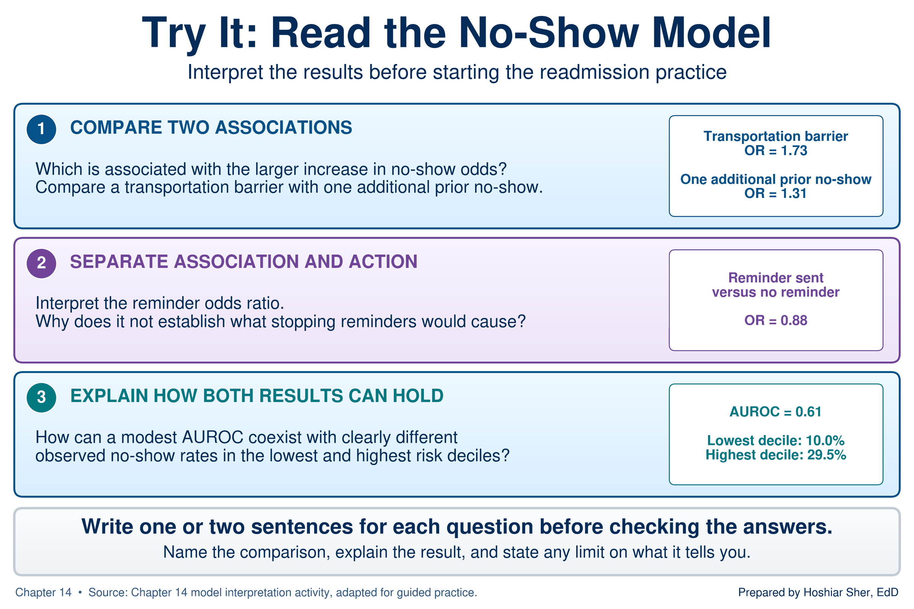
Practice on your own
Practice A: 30-day readmission
Readmission within 30 days of discharge is another binary outcome. In
datasets/DS4_inpatient_clean.csv,
readmission_30d_flag is 1 when a patient was readmitted
within 30 days. The file records readmissions only through December 31,
2025, so a stay discharged after December 1, 2025 has less than 30 days
of follow-up, and a readmission after the year’s end would be missing
and coded 0.
The readmission rate is 2.5 percent for December 2025 discharges and 0 percent for the 83 January 2026 discharges, against 8.3 percent for earlier stays. The practice therefore keeps only stays with a complete 30-day window, a restriction that standard readmission measures also apply. Figure 20 illustrates the rule.
![Figure 20: Why complete follow-up matters for a 30-day readmission outcome. The file records readmissions through December 31, 2025, so a stay discharged on December 1 has a full 30-day window, while one discharged on December 20 does not. Of 8,500 stays, the 8,030 discharged on or before December 1, 2025 have complete follow-up, with 667 readmissions (8.3 percent); the 470 discharged later are excluded. The two timelines are illustrative. Source: datasets/DS4_inpatient_clean.csv, stays discharged January 2024 to January 2026.](figures/generated/ch_14_follow_up.png)
Of the 8,030 stays discharged on or before December 1, 2025, 667 (8.3
percent) were followed by a readmission. Fit a logistic regression of
readmission on three explanatory variables:
comorbidity_count, the number of other health conditions
recorded; icu_flag, whether the stay included care in the
intensive care unit (ICU); and age_at_admit. Some patients
have more than one stay, so, as in Chapter 13, the stays are not fully
independent observations.
- Open
datasets/DS4_inpatient_clean.csvand save a working copy namedch14_readmission_model. The file has 8,500 stays in rows 2 to 8501 and 32 columns,AtoAF. - Click any cell in column
E,discharge_datetime. Open the sort dialog as in walkthrough step 2. - Sort by discharge_datetime, from Oldest to Newest, and click OK. Row 8031 shows a discharge on December 1, 2025, and row 8032 a discharge on December 2, 2025.
- Click the Name Box, type
8032:8501, and press Enter. Excel selects the 470 stays discharged after December 1, 2025. - Choose Home > Delete > Delete Sheet Rows. The data now end at row 8031.
- Click any cell inside the data, and convert it to a Table with Insert > Table.
- Set the Table Name to
Stays. - Add a worksheet named
Model. - On
Model, typeTerminA1andCoefficientinB1;Intercept,Comorbidities,ICU, andAgeinA2:A5; and0in each ofB2:B5. - On the data sheet, click
AG1, typescore, and press Enter. - In
AG2, enter=Model!$B$2 + Model!$B$3*[@comorbidity_count] + Model!$B$4*[@icu_flag] + Model!$B$5*[@age_at_admit]. Every row shows0. - Click
AH1, typeprob, and press Enter. - In
AH2, enter=1/(1+EXP(-[@score])). Every row shows0.5. - Click
AI1, typeloglik, and press Enter. - In
AI2, enter=IF([@readmission_30d_flag]=1, LN([@prob]), LN(1-[@prob])). - On
Model, typeLog-likelihoodinA7, and inB7enter=SUM(Stays[loglik]). It shows-5565.97. - Click
B7, and open Solver as in walkthrough step 22. - Set the objective to
$B$7and select Max. - Enter
$B$2:$B$5as the changing cells. - Clear Make Unconstrained Variables Non-Negative, and choose GRG Nonlinear.
- Click Solve, and keep the solution.
B7rises to about-2262.22. If Solver will not run in your version, type the coefficients from the answer key intoB2:B5and continue. - In
C1, typeOdds ratio. InC3, enter=EXP(B3), and drag the fill handle down toC5. - Build the decile table with walkthrough steps 31 to 39: the
boundaries in
F2:F11fromStays[prob], adecilecalculated column inAJof theStaysTable, and the counts and rates fromStays[decile]andStays[readmission_30d_flag].
Solver’s coefficients can differ from the answer key’s in a later decimal place, which can move a few stays between deciles. Your decile rates should agree with the answer key’s to within about 1 percentage point, with the same rise from the lowest decile to the highest. Write two sentences interpreting the ICU odds ratio, holding the other variables constant, and compare the readmission rate in the highest and lowest deciles. The model’s AUROC, calculated in statistical software, is 0.60. The answer key gives check values for every step.
Calibration. The decile table also checks whether
the predicted probabilities are accurate as numbers, not only as a
ranking. Calibration compares the average predicted
probability with the observed rate in each group (Steyerberg, 2019). For
the walkthrough’s model, the highest decile’s average predicted
probability is 29.8 percent against an observed 29.5 percent, and the
lowest decile’s is 10.5 percent against 10.0 percent. You can add the
comparison to your table with
=AVERAGEIFS(Appts[prob], Appts[decile], E2). Figure 21
contrasts the two checks.
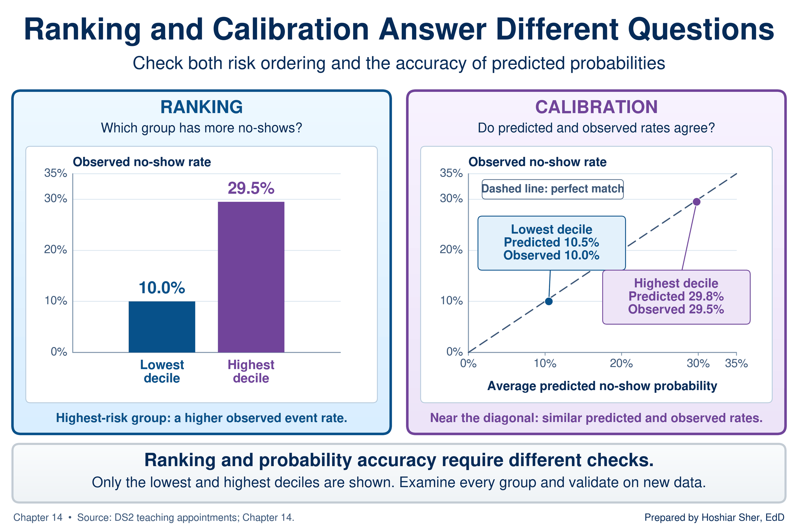
Validation. A model judged on the same data used to fit it tends to look better than it will on new cases, a problem known as optimism (Steyerberg, 2019). Validation tests the model on data it has not seen, such as later appointments. In this teaching file, a model fitted to the 2024 appointments ranks the 2025 appointments about as well as it ranks its own data, with an AUROC of 0.61 on 2024 and 0.62 on 2025. Real data often show a drop. Figure 22 outlines the check.
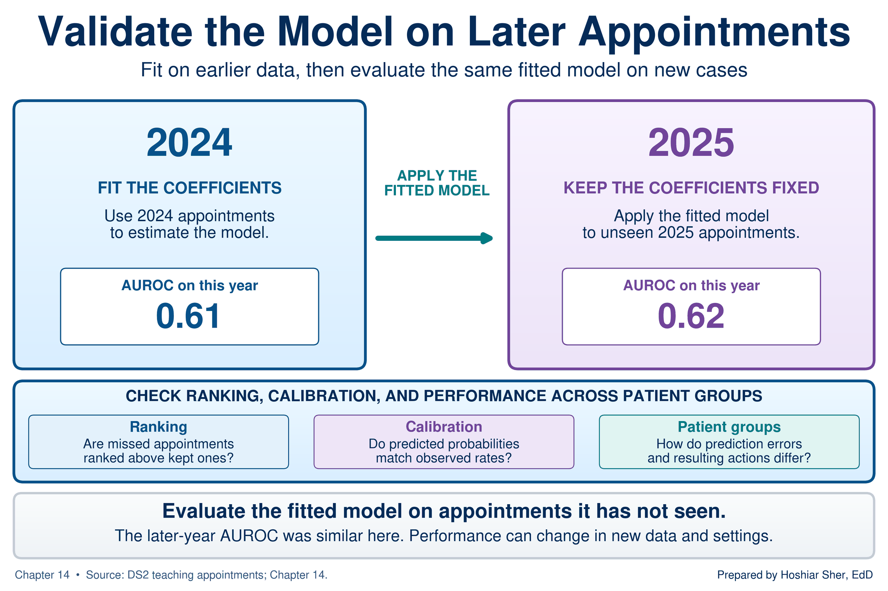
Published prediction models are expected to report how they were validated; the TRIPOD+AI (Transparent Reporting of a multivariable prediction model for Individual Prognosis Or Diagnosis, updated for artificial intelligence) guideline lists what such a report should contain (Collins et al., 2024).
Straight-line assumption. Logistic regression
assumes that each numerical variable has a straight-line relationship
with the log-odds. For lead_days, that means each extra day
multiplies the odds by the same 1.015, whether the appointment is 2 or
120 days away. Checking and relaxing this assumption, for example by
grouping lead time into bands, is covered in fuller treatments (Hosmer
et al., 2013).
Choosing a cutoff. Turning a probability into an action, such as “call every appointment above 0.20,” requires a cutoff. Chapter 15 develops that decision with the same model.
A study of outpatient scheduling examined systems that use machine learning to predict no-shows and then place the patients with the highest predicted risk into overbooked slots, so that a likely no-show does not leave a clinician idle. In the specialty clinic whose data the authors used, Black patients had a higher predicted no-show probability than other patients. In the authors’ scheduling simulations, overbooking by predicted risk placed Black patients in overbooked slots more often, and they waited about 30 percent longer than other patients. The authors proposed a scheduling method that minimizes the waiting time of the group expected to wait longest, which removed the disparity at a similar cost to the clinic (Samorani et al., 2022).
The same risk score supports two different uses. Risk-based overbooking can lengthen waits for the patients flagged as high risk; extra reminders or transportation help support them. Figure 23 summarizes the contrast.
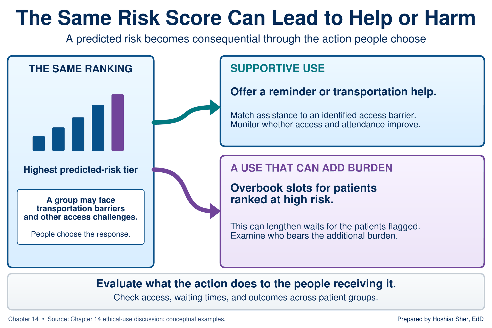
Chapter 5 closed its discussion of fairness, in the section on ethics, with four questions to ask of your own numbers: “who is in this data, who is missing, what was actually measured, and could this measure disadvantage someone.” A transportation barrier is a social circumstance, not a choice, and a model that uses it can carry that disadvantage into scheduling decisions. A related study found a widely used care-management algorithm that, by predicting health care costs rather than illness, flagged Black patients for extra help less often than equally sick White patients (Obermeyer et al., 2019). The model ranks; the people who use it decide whether the ranking leads to help or to harm.
- A binary outcome has two values, recorded as 1 and 0. Its average is a probability, and logistic regression predicts that probability while keeping every prediction between 0 and 1.
- Odds are p ÷ (1 − p). An odds ratio divides the odds in one group by the odds in another; 1 means no difference, and an odds ratio is not a ratio of probabilities.
- Logistic regression passes a linear score through the logistic
function,
=1/(1+EXP(-z)).EXPof a coefficient is an odds ratio, read with the other variables held constant and as an association, not a cause. - Solver fits the model by maximizing the summed log-likelihood with the GRG Nonlinear method; Excel for the web uses Frontline’s free Solver add-in, and the published coefficients are a fallback in any version.
- AUROC, here 0.61, measures how well the model ranks risk. Deciles
from
PERCENTILE.INCandXMATCHshow that even a modest ranking can sort cases into tiers with clearly different rates, and how those tiers are used is a decision with ethical consequences.
- Explain in two or three sentences why a straight line is not suited
to predicting
no_show_flag, using Figure 2. Then define logistic regression in one sentence of your own. - In your walkthrough workbook’s
ApptsTable, which holds the 30,571 kept-or-missed appointments, useCOUNTIFSto build a two-by-two table ofinterpreter_needed_flagagainstno_show_flag. Calculate the odds of a no-show in each group and the odds ratio, and interpret the result in one sentence. - A newsletter states that “sending a reminder cuts no-shows by 12 percent,” citing the odds ratio of 0.88. Identify two problems with the statement, and rewrite it accurately.
- Using the coefficients from Part C, calculate the score and the predicted probability for a telehealth appointment booked 30 days ahead, with a reminder, for a patient with one prior no-show and no transportation barrier. Show the score before converting it.
- The no-show model has an AUROC of 0.61 and Practice A’s readmission model 0.60. Explain what 0.61 means in terms of a randomly chosen missed and kept appointment, and explain why a model with an AUROC this modest can still be useful to the director, referring to Figure 17.
- Using the Real World box, describe one supportive use and one harmful use of the no-show risk score. Then apply two of the fairness questions that close Chapter 5’s discussion of fairness to the transportation barrier variable.
Try It (odds and odds ratios). (1) Odds = 0.30 ÷ 0.70 = 0.43, or about 43 missed appointments for every 100 kept. (2) For patients with a transportation barrier, the odds of a no-show are 1.72 times the odds for patients without one, about 72 percent higher. (3) An odds ratio of exactly 1 would mean the odds of a no-show are the same with and without a transportation barrier, so the barrier would show no association with no-shows.
Practice A check values. After the sort and
deletion, the data end at row 8031 with 8,030 stays, 667 of them
followed by a readmission. The score column starts at 0,
prob at 0.5, and loglik at −0.693147;
B7 starts at −5565.97 and rises to about −2262.22 after
Solver. The coefficients are about −3.4351 (intercept), 0.0512
(comorbidities), 0.4121 (ICU), and 0.0137 (age), giving odds ratios of
1.053 per comorbidity, 1.510 for ICU care, and 1.014 per year of age.
With these coefficients, the decile counts range from 790 to 813 and add
to 8,030.
The readmission rate is 5.3 percent in the lowest decile and 13.9 percent in the highest. Interpretation: holding comorbidities and age constant, stays that included ICU care have about 51 percent higher odds of a 30-day readmission. The highest decile’s readmission rate is about 2.6 times the lowest decile’s, a clear but less sharp separation than the no-show model’s, consistent with its slightly lower AUROC of 0.60.
Try It (reading the model). (1) A transportation barrier, with an odds ratio of 1.73 against 1.31 for one prior no-show. (2) The odds ratio of 0.88 suggests the no-show rate would rise, because appointments with reminders have lower odds of being missed. The model cannot confirm it: the data are observational, and clinics may send reminders to different kinds of patients, so the association is not a measured effect of reminders.
- AUROC judges the ranking of every possible pair of a missed and a kept appointment, and many pairs are ranked the wrong way. The decile chart asks a coarser question, whether the highest group has more no-shows than the lowest, and a modest ranking can answer that clearly. Figure 24 summarizes these answers.
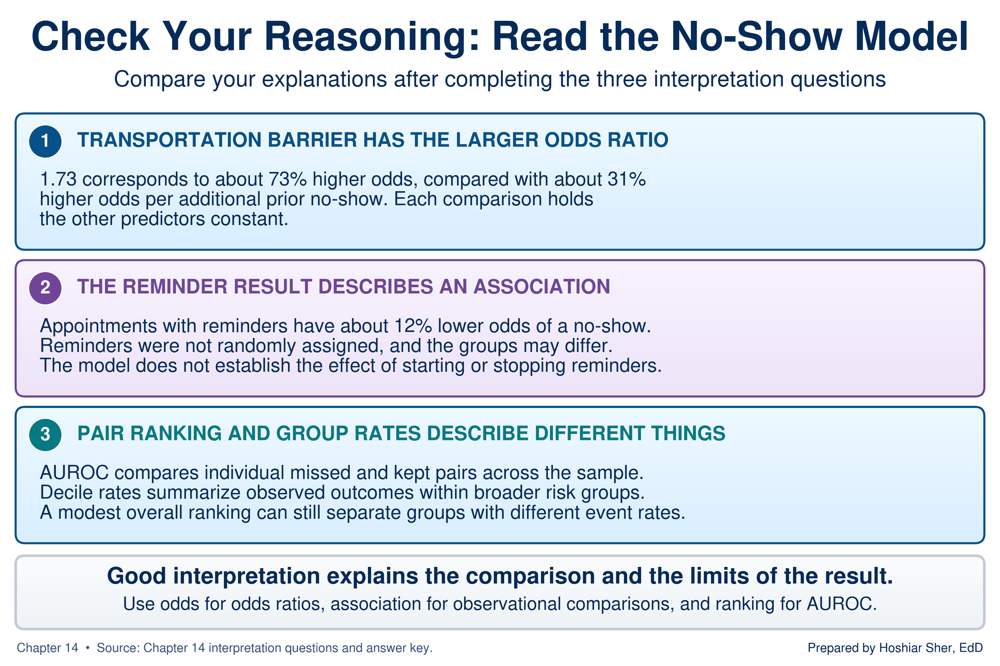
Exercises. Answers to the end-of-chapter exercises are provided to instructors in the instructor answer guide.
- Collins, G. S., Moons, K. G. M., Dhiman, P., Riley, R. D., Beam, A. L., Van Calster, B., Ghassemi, M., Liu, X., Reitsma, J. B., van Smeden, M., Boulesteix, A.-L., Camaradou, J. C., Celi, L. A., Denaxas, S., Denniston, A. K., Glocker, B., Golub, R. M., Harvey, H., Heinze, G., . . . Logullo, P. (2024). TRIPOD+AI statement: Updated guidance for reporting clinical prediction models that use regression or machine learning methods. BMJ, 385, Article e078378. https://doi.org/10.1136/bmj-2023-078378
- Dantas, L. F., Fleck, J. L., Cyrino Oliveira, F. L., & Hamacher, S. (2018). No-shows in appointment scheduling: A systematic literature review. Health Policy, 122(4), 412–421. https://doi.org/10.1016/j.healthpol.2018.02.002
- Frontline Systems. (n.d.). Solver add-in help and support. Frontline Solvers. https://solver.com/solver-app-help-and-support
- Hanley, J. A., & McNeil, B. J. (1982). The meaning and use of the area under a receiver operating characteristic (ROC) curve. Radiology, 143(1), 29–36. https://doi.org/10.1148/radiology.143.1.7063747
- Hosmer, D. W., Lemeshow, S., & Sturdivant, R. X. (2013). Applied logistic regression (3rd ed.). Wiley. https://doi.org/10.1002/9781118548387
- Microsoft. (n.d.-a). AVERAGEIFS function. Microsoft Support. https://support.microsoft.com/en-us/excel/functions/averageifs-function
- Microsoft. (n.d.-b). COUNTIFS function. Microsoft Support. https://support.microsoft.com/en-us/excel/functions/countifs-function
- Microsoft. (n.d.-c). Define and solve a problem by using Solver. Microsoft Support. https://support.microsoft.com/en-us/excel/define-and-solve-a-problem-by-using-solver
- Microsoft. (n.d.-d). EXP function. Microsoft Support. https://support.microsoft.com/en-us/excel/functions/exp-function
- Microsoft. (n.d.-e). LN function. Microsoft Support. https://support.microsoft.com/en-us/excel/functions/ln-function
- Microsoft. (n.d.-f). Load the Solver Add-in in Excel. Microsoft Support. https://support.microsoft.com/en-us/excel/load-the-solver-add-in-in-excel
- Microsoft. (n.d.-g). PERCENTILE.INC function. Microsoft Support. https://support.microsoft.com/en-us/excel/functions/percentile-inc-function
- Microsoft. (n.d.-h). XMATCH function. Microsoft Support. https://support.microsoft.com/en-us/excel/functions/xmatch-function
- Obermeyer, Z., Powers, B., Vogeli, C., & Mullainathan, S. (2019). Dissecting racial bias in an algorithm used to manage the health of populations. Science, 366(6464), 447–453. https://doi.org/10.1126/science.aax2342
- Samorani, M., Harris, S. L., Blount, L. G., Lu, H., & Santoro, M. A. (2022). Overbooked and overlooked: Machine learning and racial bias in medical appointment scheduling. Manufacturing & Service Operations Management, 24(6), 2825–2842. https://doi.org/10.1287/msom.2021.0999
- Schober, P., & Vetter, T. R. (2021). Logistic regression in medical research. Anesthesia & Analgesia, 132(2), 365–366. https://doi.org/10.1213/ANE.0000000000005247
- Sperandei, S. (2014). Understanding logistic regression analysis. Biochemia Medica, 24(1), 12–18. https://doi.org/10.11613/BM.2014.003
- Steyerberg, E. W. (2019). Clinical prediction models: A practical approach to development, validation, and updating (2nd ed.). Springer. https://doi.org/10.1007/978-3-030-16399-0
- Szumilas, M. (2010). Explaining odds ratios. Journal of the Canadian Academy of Child and Adolescent Psychiatry, 19(3), 227–229. https://pmc.ncbi.nlm.nih.gov/articles/PMC2938757/
- Area under the ROC curve (AUROC)
- A number from 0 to 1 that summarizes how well a model ranks risk: the probability that a randomly chosen case with the event receives a higher predicted probability than a randomly chosen case without it, counting ties as half; 0.5 is a random ranking.
- Binary outcome
- An outcome with exactly two possible values, such as missed or kept, recorded as 1 and 0.
- Calibration
- The agreement between a model’s predicted probabilities and the observed event rates.
- Decile
- One of ten groups of about equal size formed by ranking cases on a value, such as predicted risk.
- False-positive rate
- The share of cases without the event that a model flags at a given cutoff.
- Generalized Reduced Gradient (GRG) Nonlinear
- The Solver method for smooth nonlinear problems, used to fit a logistic regression in Excel.
- Likelihood
- A measure of how well a model’s predicted probabilities match the observed outcomes; logistic regression chooses the coefficients that make it as large as possible.
- Logistic function
- The S-shaped function 1 ÷ (1 + e⁻ᶻ), which converts any score z into a probability between 0 and 1.
- Logistic regression
- A regression model that predicts the probability of a binary outcome from one or more explanatory variables, keeping every prediction between 0 and 1.
- Log-likelihood
- The sum, across all cases, of the natural logarithm of the probability a model gave to each case’s actual outcome; values closer to 0 indicate a better match.
- Log-odds
- The natural logarithm of the odds of an event; the scale on which a logistic regression’s score is linear.
- Odds
- The probability that an event happens divided by the probability that it does not.
- Odds ratio
- The odds of an event in one group divided by the odds in a comparison group; in logistic regression, the exponentiated coefficient.
- Optimism
- The tendency of a model to perform better on the data used to fit it than on new cases.
- Receiver operating characteristic (ROC) curve
- A plot of a model’s true-positive rate against its false-positive rate at every possible cutoff.
- Risk stratification
- Sorting a population into tiers by predicted risk so that limited resources can be directed to the highest tiers first.
- Score
- In logistic regression, the intercept plus each coefficient times its variable, before conversion to a probability.
- True-positive rate
- The share of cases with the event that a model flags at a given cutoff; also called recall or sensitivity.
- Validation
- Testing a model on data that were not used to fit it, to estimate how well it will perform on new cases.
Cite this chapter
@incollection{sher2026ch14,
author = {Sher, Hoshiar J.},
title = {Logistic Regression for Binary Outcomes and Risk Stratification},
booktitle = {Introduction to Healthcare Data Analytics},
year = {2026},
doi = {10.5281/zenodo.23327956},
url = {https://yar177.github.io/intro-to-HDA-site/ch14.html}
}